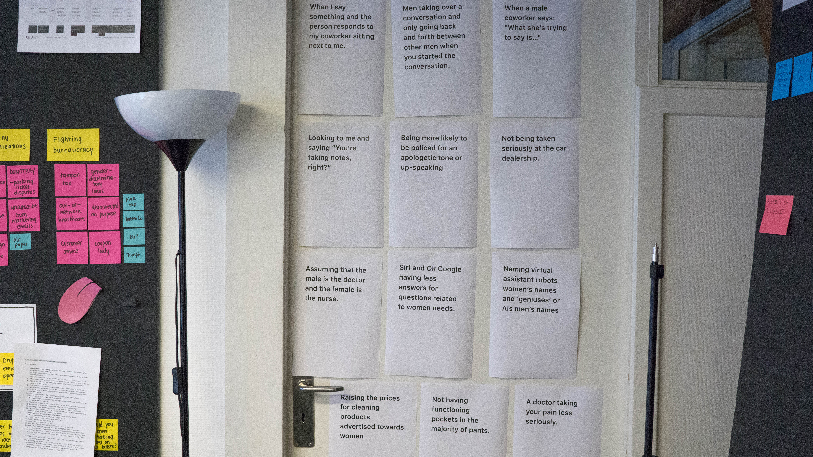

.
FINAL THESIS:
10 weeks
CIID 2017
.
THEMES:
Micro justice, participatory design, social design, impact, biases, conflict resolution
.
ADVISOR:
Henriette Krus @The Exposed
.
PENTA
.
Racism? Ageism? Sexism? In today’s society, underneath the larger and more clearly defined injustices, we also face everyday -isms that make the world a less fair and equal place. Some of it has become so normalized or part of our culture that it becomes invisible. These are the invisible injustices that are hard to bring up but still leave us feeling disrespected and pushed aside without really knowing why.
.
#metoo
.
What can we really do to address injustice? The answer according the UN seems to be awareness campaigns. It was around this time that the #metoo campaign came out strong and attacking sexism with full force and numbers, calling out the problem, particularly to the people that this exists, especially to people that you know and care about. An affirmation of the problem I was looking at but also a representation of the problem. The #metoo campaign was another example of an awareness campaign, more successful than any before it, but putting the burden of the issue on the victims and creating a culture of victims and perpetrators, creating a narrative of grieving and consoling. People would post their stories on social media and Where is the feeling of justice in the #metoo campaign? So what? What’s next? What can we do about it? PENTA is a first step to find microjustices* to address the invisible yet divisive nature of the grayer issues within communities.
MICRO JUSTICE–– n. An act against microaggression that may seem small yet has a larger net positive impact.

PENTA is an open source workshop that uses DIY data visualizations and a maker approach to talk about hard topics. PENTA works within communities of people that know each other already, such as work teams and organizations. It can be run during team building or conferences and ideally done more than once, before large projects or whenever a new member joins the team. The kit comes with a starter pack of topics, blank cards for new examples, voting sheets, voting tokens and reflection sheets. PENTA Gender Edition comes with a starter pack of gender issues. In the future, starter packs for race or age or other isms could be integrated into a single workshop.
.
FINAL RESULT
.
The kit comes with a starter pack of topics, blank cards for new examples, voting sheets, voting tokens and reflection sheets. PENTA Gender Edition comes with a starter pack of gender issues. In the future, starter packs for race or age or other isms could be integrated into a single workshop.
.
HOW IT WORKS
.
The workshop is broken into two parts. The first is to establish everyone’s baseline and visualize the group’s temperature on certain topics. The second part is a set time and space to build solutions for a specific topic.
To supplement the physical standalone workshops, PENTA also lives online where anyone can interact with the kit by using their phones and computers to input their individual data and see real time visualizations. Results from workshops or from online are collected through the site to keep the kit relevant and growing for future workshops.

The goal of running this workshop is not only to create a space for becoming aware of each others boundaries and coming to agreements on what constitutes a considerate space, it balances the conversation building solutions or ideas to directly address certain issues and not just stop at the problem. By crowdsourcing all the ideas and conversations that stem from these workshops, PENTA becomes a larger system of microjustice where information and ideas are shared online.
.
RESEARCH & PROCESS
.
In early interviews, I began by trying to get to the root of our implicit biases and highlight the invisible forces that influence our behavior. Do you think you’ve ever done something that was sexist and hurtful to someone else? This is a hard question to answer and impossible to see yourself in an unbiased way. Because often those actions are UN-intentional and so deeply rooted in patterns and culture that we are blind to them.
.
—— IMPLICIT BIASES
I took inspiration from the moments of silence or hard to answer moments in interviews. What was hard to answer? Why was it hard to answer? How can you change someone’s perspective? I was also pushed by the negative response from advisors and reviewers. The naysayers, and those saying that it wasn’t a good thing to call out behavior. Or that my scope was too personal or too political. Why were people responding this way? What buttons was I pushing? What statement was I trying to make as a designer?
—— POLITICAL CORRECTNESS
.
PROTOTYPE 1
.
The first prototype was an open call for examples of micro sexism. To start articulating the problem, to myself and also to others, I realized that the problem statement was too high level. It was hard to have a productive conversation talking around the problem. I researched for existing lists and contributed my own experiences as a women of color growing up in the US. I used several methods, including a publicly available google doc with a running list and instructions to openly edit and comment with their own experiences. I then iterated on that and created a survey quizlet style, ‘Have you ever..’ where I began to gather data on who had experienced or seen or even done to someone else some of these examples of casual sexism. And at the end of the survey I asked for additional examples.
.
PROTOTYPE 2
.
As I created this crowdsourced list, I played with ways to use this list to inform my final design. Do I come up with my own solution? Do I design a forum? A service? A product? An app? I decided to start with a quick poster series. I printed all the examples and posted them all around my workspace.
“People are always trying to answer big questions like, “How do I create World Peace?”, which you can’t answer. But you can begin to try by constraining the question to “How might I create world peace... with a toy? ... with a speech? ... with a poster series?”
—— JOSHUA WALTON
.
—— THE RESULT
.
Conflict. Simply visualizing these examples brought conversations that were either fully supportive or fully against. Without the intent to ‘push buttons’ or to be ‘aggressive’. Yet some people found it offensive or too strong. Instead of supporting positive dialog and ideas for progress, I was getting stuck between two extremes, people that totally resonated and people that felt attacked. I realized that I was trying to build a project around microjustices without considering the fact that I wasn't even on the same page with my peers and mentors. Why was that? What could I do to get past that and start talking about ideas?
.
“I feel like you’re telling me that I can’t do something. Like I’m doing something wrong when actually people are being too sensitive.”
—— anonymous
.
PROTOTYPE 3
.
How might we minimize the confrontational aspect of pointing out sexist or racist acts, no matter how small they might be? How do we know where the line is? How do we know each other’s boundaries without